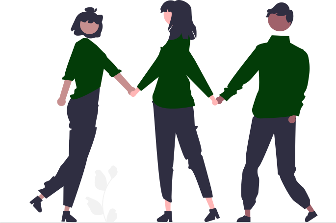

Solidariedade em ação: Junte-se à Comunidade de apoio!
Cadastre-se para se conectar com pessoas dispostas a oferecer
assistência quando necessário.
Nossa plataforma facilita a solidariedade e o apoio mútuo,
combinando localização em tempo real, correspondências instantâneas
e conversas diretas via WhatsApp.
Junte-se a nós e faça parte da mudança hoje mesmo!
